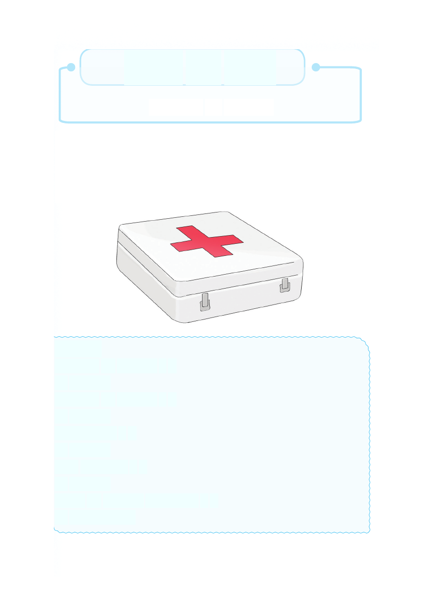

Sura ya Sita
Huduma ya kwanza
Utangulizi
Katika sura hii utajifunza kuhusu huduma ya kwanza.
Utaweza kubaini vifaa vilivyomo ndani ya sanduku la huduma
ya kwanza.Vilevile utaweza kubaini ajali zinazotokea katika
mazingira yako na namna ya kutoa taarifa ajali inapotokea.
Wimbo
Huduma ya kwanza x 2
Ni msaada
Huduma ya kwanza x 2
Ni msaada
Unaotolewa x 2
Ni msaada
Kwa mgonjwa x 2
Ni msaada
Kabla ya kwenda hospitalini x 2
Ni msaadaaaaa
Sura ya Sita Huduma ya kwanza Utangulizi Katika sura hii utajifunza kuhusu huduma ya kwanza. Utaweza kubaini vifaa vilivyomo ndani ya sanduku la huduma ya kwanza.Vilevile utaweza kubaini ajali zinazotokea katika mazingira yako na namna ya kutoa taarifa ajali inapotokea. Wimbo Huduma ya kwanza x 2 Ni msaada Huduma ya kwanza x 2 Ni msaada Unaotolewa x 2 Ni msaada Kwa mgonjwa x 2 Ni msaada Kabla ya kwenda hospitalini x 2 Ni msaadaaaaa